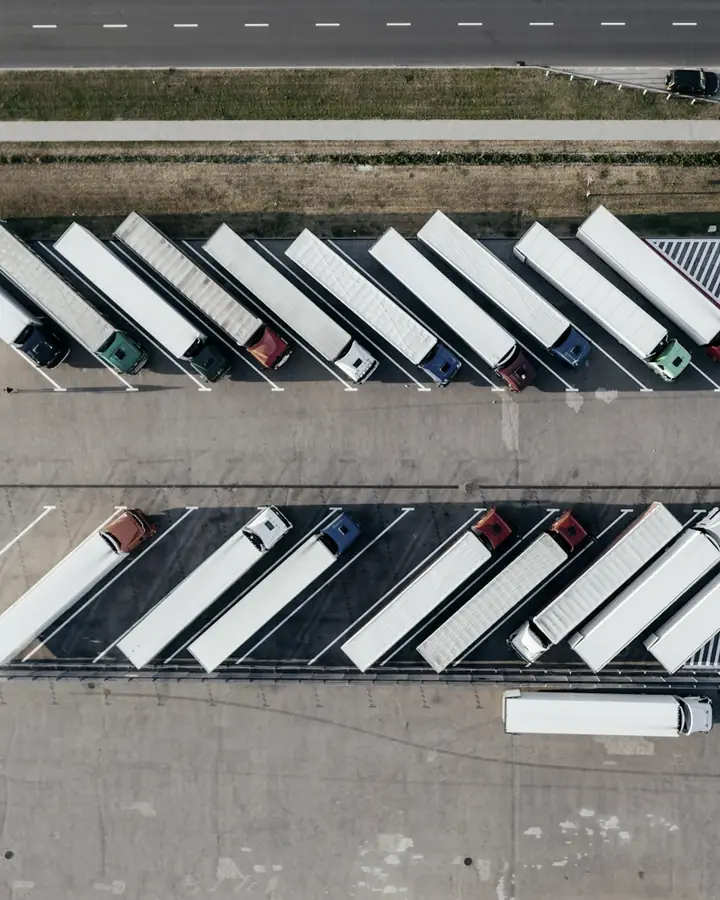

Europa de Vest
Germania, Austria, Franța, Benelux și Italia: FTL și grupaj regulat.
Transport rutier european · Toată Europa · În ambele sensuri
O rețea fixă de transportatori dedicați în toată Europa, un dispecer responsabil și urmărire GPS live pentru fiecare transport.
FTL · Grupaj
România ⇄ Europa.
01Acoperire
Oriunde trebuie să ajungă marfa ta în Europa, rețeaua noastră fixă de transportatori o duce acolo, door to door. Și pentru că ne întoarcem încărcați, transporturile spre România primesc tarife competitive.
Germania, Austria, Franța, Benelux și Italia: FTL și grupaj regulat.
Polonia, Cehia, Slovacia, Ungaria și restul inimii industriale CEE.
Croația, Bulgaria, Grecia și mai departe, pe rute de tranzit vamal consacrate.
Rute regulate cu zile fixe de plecare, de exemplu Grecia de luni până miercuri.
GPS · Live
Fiecare transport e pe hartă.
02Urmărire
Fiecare camion pe care îl încărcăm are GPS de la rampă până la destinatar. Vezi unde este marfa ta, iar noi vedem o întârziere înainte să devină problema ta.
Exemplu ilustrativ al ecranului de urmărire
Alba Iulia → Europa
Prin Europa Centrală și de Sud.
03Rețea
Acoperim toată Europa. Acestea sunt rutele pe care circulăm cel mai des:
04Fiabilitate
livrări la timp
Este singura cifră pe care o publicăm, pentru că e cea pe care o simte linia ta de producție.

Interlogistik Transport S.R.L.
Din 2011.
05Companie
Interlogistik Transport S.R.L. este o firmă de transport rutier din Alba Iulia. Nu dăm marfa ta oricui e liber în ziua aceea: lucrăm cu un grup fix de transportatori parteneri pe care îi cunoaștem pe nume.
Expediezi regulat? Clienții cu contract primesc condiții pe măsura colaborării. Întreabă-ne.

Cere o ofertă
Următorul tău transport.
06Ofertă
Trimite ruta, data și ce transporți. Un dispecer îți răspunde în cel mult o zi lucrătoare.
Sau scrie la office@interlogistik-transport.com